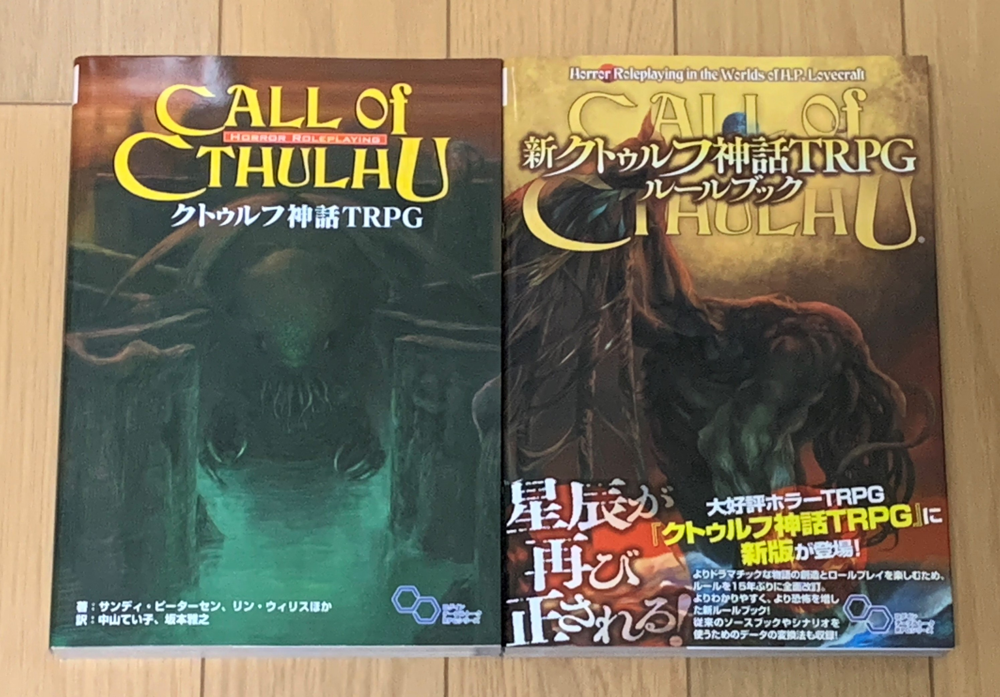
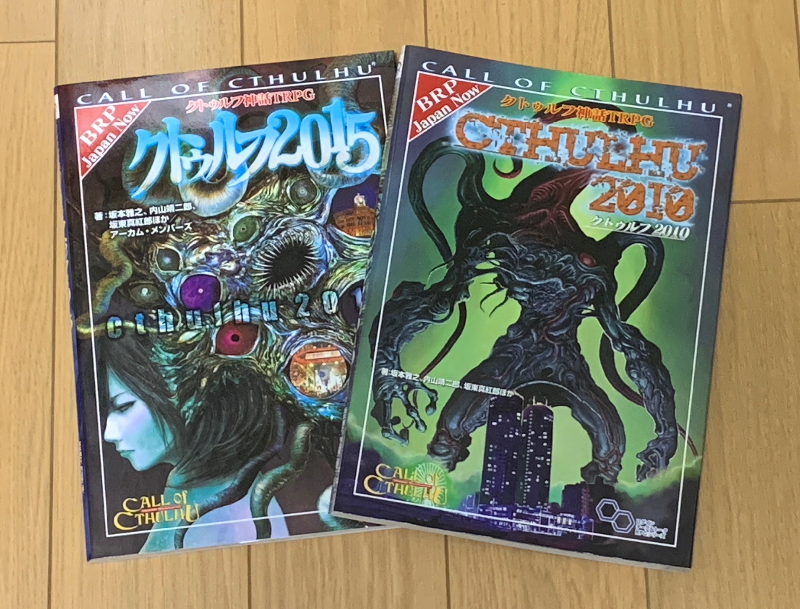
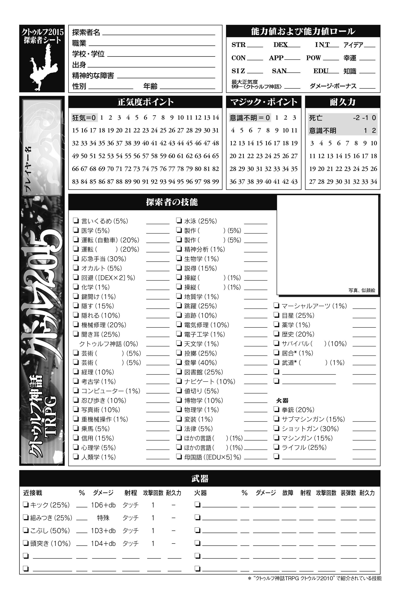
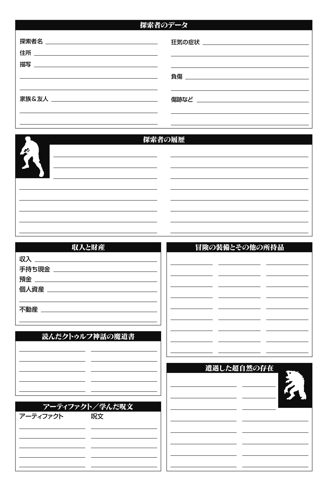
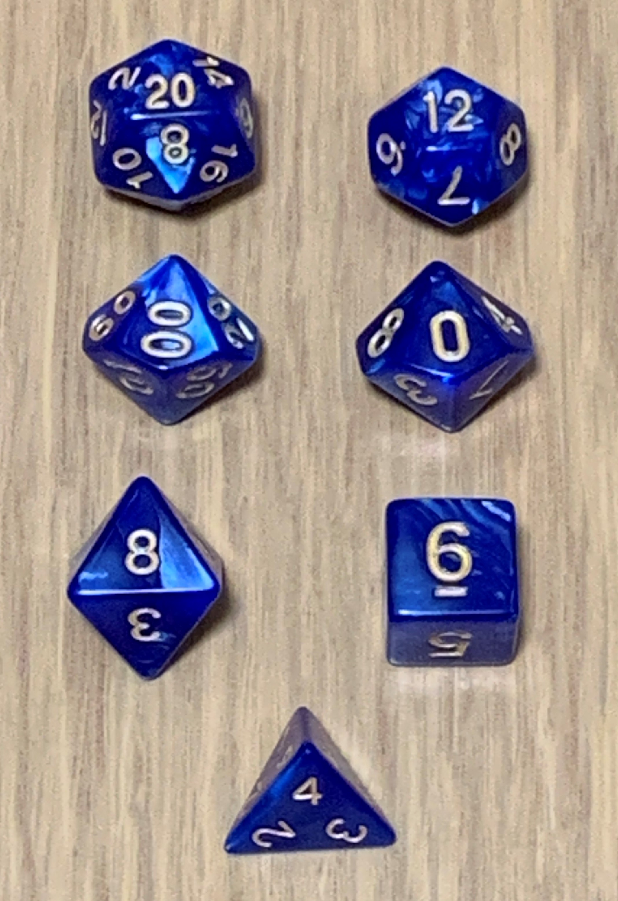

クトゥルフ神話TRPGとは
『クトゥルフの呼び声』とは、アメリカのゲーム会社であるケイオシアム社が1981年に製作したテーブルトークRPG。クトゥルフ神話の世界観を体験するホラー・ジャンルの作品である。以後は改訂を重ね、2014年に第7版が発売。（Wikipediaより引用）
上の画像は左から、『クトゥルフ神話TRPG（訳：中山てい子、松本雅之）』、
『新クトゥルフ神話TRPG（訳：松本雅之ほか、アーカム・メンバーズ）』、
『クトゥルフ神話TRPG クトゥルフ2015』、『クトゥルフ神話TRPG クトゥルフ2010』です。



遊ぶ上で必要なもの
クトゥルフ神話TRPGは、基本ルールブック、ダイス・サイコロ、筆記用具があれば遊べます。
上の画像の左はキャラクターシートといいルールブックに載っています。(画像はクトゥルフ2015から)
右はクトゥルフ神話TRPGで使うダイスで、左上から横に20面、12面、10面(10の位)、10面(1の位)、8面、6面、4面ダイスです。ダイス・サイコロはスマホアプリなどもあります。
後は、必要に応じてダイストレイやマップ、サプリメントなども揃えましょう。
プレイ人数は、シナリオによって変わりますが、1人で遊べるソロシナリオや大人数で遊べるシナリオもあります。